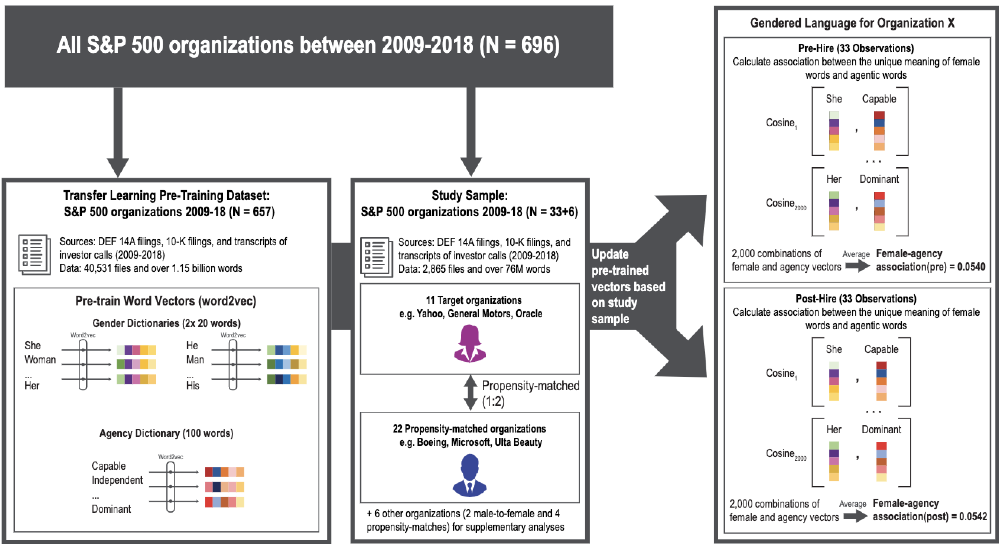

Slides
背景
在经管研究中，往往会涉及很多文本数据的编码。但是做研究面临两个问题:
难题1- 数据量大
量太大，以至于废人力所能及。
时代发展，体现在数据上的特点就是数据大爆炸，过去做经管研究，使用访谈等研究方法，收录的文本内容，规模大多停留在M级。但是现在大数据时代，研究对象相关的文本数据，G级的数据量也是很常见的。
难题2- 格式乱
信息存储技术发展，有应用不同场景的不同数据存储格式。数据可能是pdf、txt、docx，也可能是音频、视频等转录的文件。如果快捷整理，这也是个难点。
难题3-难编码
数据量少，可以人工阅读对数据进行理解和编码。但是当数据量大到无法处理的级别后，选择何种算法、各种算法技术的优缺点如何把握，对经管学者也是一个需要攻克的的技术难题。
难度大，但因为文本涉及的主体错综复杂，千丝万缕，所以可以研究很多对象。如个人、组织、社会之间的交互。
编码解码理论
斯图亚特·霍尔在《电视话语的编码和解码》提出 『编码-解码理论』。该理论形成于70年代冷战时期，冷战中不两大阵营为了维护各自的社会稳定，为了在意识形态宣传中取胜，都在宣传工作中投入了重金。
当时的宣传工具是单向的广播模式，媒体作为统治阶级的喉舌，要将统治阶级的偏好、价值观等进行加工，生产相应意识形态内容。
而普罗大众，作为内容的接受者， 一成长于该特定意识形态的社会，同时又有一定的自我意识，所以对于一个宣传内容可能会有三种反应，表里都认同、表认同里不认同、表里都不认同。

使用文本想清楚两个问题
- How text reflects its Sender？
- How text impacts its Receiver？
使用文本明晰三个角度
我做的研究使用的文本数据，涉及哪些角色、作用力方向、感兴趣的内容。
- 角色: Sender or Receiver
- 方向: Reflect or Impact
- 内容: Sender的意识(认知、偏好、…) vs Receiver的意识(认知、偏好、…)
下面是经管领域研究部分汇总，每个学者根据自己学科研究对象，应该能在4*4的矩阵中找到自己对应的位置

Berger, Jonah, Ashlee Humphreys, Stephan Ludwig, Wendy W. Moe, Oded Netzer, and David A. Schweidel. “Uniting the tribes: Using text for marketing insight.” Journal of Marketing 84, no. 1 (2020): 1-25.
人工编码与机器编码

做研究需要有干净的数据做实证分析，最为理想的是表数据，例如excel文件，每一行代表一条记录，每一列代表一个字段。编码的作用就是将非机构化的、脏乱的数据整理为干净整洁的表数据。
要明确编码方法的优点和缺点，在合理的适用范围使用。对于文本数据的编码，需要理解人工和机器两种编码方式的优缺点
| 分析方法 | 优点 | 缺点 | |
|---|---|---|---|
| 人工编码 | 质性（扎根） | 少量数据，深刻洞见。 | 难以应对大数据； 编码标准不统一； |
| 机器编码 | 词频、向量相似度、向量距离 | 标准如一; 适合大规模文本挖掘； |
需要破坏文本的结构， 丧失了部分信息量 |
机器编码-将文本转为数字或向量
-
符号法(每个词对应一个数字)
- 词典(词频)法
- 词袋法、TF-IDF
-
词嵌入(每个词对应一个向量)
符号法算法假设词语彼此是语义不相关的，目的是把 文本 转为某个数字或向量。
而词嵌入算法假设不同的词语是由n维个语义组成的线性组合，目的是把 词语 转为向量。
符号法
符号法就是数某个词或某类词的出现次数(或占比)。符合法是计算机NLP领域的专业叫法，在经管社科领域，最常见的文本分析软件LIWC其实也是符号法。而LIWC全(Linguistic Inquiry and Word Count，即语义查询与词频统计。
符号法的应用
| 概念 | 测量方法 |
|---|---|
| 认真(努力) | 测量文本中词语的个数 |
| 情感 | 使用情感词典，统计文本中正面词占比 |
| 可读性 | 文本中高难度(或专业性)词占比 |
| 客观性 | 文本中某个值的方差，如情感 - A 产品不错， 包装破损， 态度很好， 综合还是推荐大家购买! [5, 1, 5, 4]- B 产品垃圾，使用垃圾， 包装破损， 差评!! [1, 1, 1, 1]A的方差更大，更客观 |
| 相似性(政策稳定性) | cosine(text_vector1, text_vector2) |
| … | … |
词嵌入
词嵌入技术有 Word2Vec、Glove，这类技术是挖掘出每个词的上下文语境，通俗的说法就是让计算机，对同样的文章数据，做千万次、上亿次完形填空。这样每个词语都有独特的上下文语义，并以n维向量形式表示，所以词嵌入也可以称之为词向量。
向量模型有近义词相近、概念类似的平行两个特点。分别举几个例子，方便大家理解。
语义空间是n维，为了便于理解，将其压缩至二维空间。中学的向量大家都比较熟悉，在二维坐标中空间中，两个点的连线可以组成新的向量，相同的向量是平行的。
而在下图的2维语义空间中，good、best语义更接近，所以空间距离更近。同理bad、worst更近。
而vector(good, best)、vector(bad, worst)这两个向量均表示原形->最高级, 语义向量会近似平行。
同理， vector(good, bad)、 vector(best, worst)两个向量表示 好->差，语义向量也会近似平行。

词嵌入与认知
刚刚词嵌入的语义空间中的几个例子，其实就体现了语言的记忆。语义记录了使用该语言的人的记忆。不同的组织，对于同一种概念，会有不同的偏好。例如， Nature2022使用大规模语料数据训练出的词向量，发现语言中残存着人类的某些认知记忆。
通过构建概念词组对儿，在空间中投影，就可以挖掘出词语的在该概念中的分值。例如，使用
- SMALL = [small, tiny, little…]
- BIG = [big, mega, large…]
每个词都是一个n维的向量，SMALL或BIG都能计算出一个均值向量。大家记得中学的向量投影不，Nature2022就使用这个朴素的方法测量每个动物名称所蕴含的人类尺寸认知。
Grand, G., Blank, I.A., Pereira, F. and Fedorenko, E., 2022. Semantic projection recovers rich human knowledge of multiple object features from word embeddings. Nature Human Behaviour, pp.1-13.
技术对比
这里做个表格对比，大家自己感受下三种技术的异同。
| 技术 | 技术 | 维度类比 | 任务 | 例子 |
|---|---|---|---|---|
| 符号法-字典（词频） | 数个数 | 原子 | 统计每句话里的名词个数 | sent_num1 = 2 sent_num2 = 1 |
| 符号法-词袋 | bag of words one-hot Tf-idf |
分子 | 转化为词向量, 计算两个句子相似度。 | vec1 = [1, 1, 1, 1, 1, 0] vec2 = [0, 1, 0, 1, 0, 1] similarity = cosine(vec1, vec2) |
| 词嵌入 | word2vec、 glove等 |
中子、质子、电子 | 词语相似度。(语义上大小相近，方向相反; 态度、偏见) | mom = [0.2, 0.7, 0.1] dad = [0.3, 0.5, -0.2] |
经管-文本分析-文献
在这里我把技术细分为词频、词袋、w2v建词典、w2v认知变迁四个维度，整理了经管7篇论文。大家可以阅读这7篇论文，掌握文本分析的应用场景。
| 文献 | 定性 | 词频 | 词袋 | W2V建词典 | W2V认知变迁 |
|---|---|---|---|---|---|
| 王伟, 陈伟, 祝效国 and 王洪伟, 2016. 众筹融资成功率与语言风格的说服性–基于 Kickstarter 的实证研究. 管理世界, (5), pp.81-98. | Y | Y | |||
| 语言具体性如何影响顾客满意度 Packard, Grant, and Jonah Berger. “How concrete language shapes customer satisfaction.” Journal of Consumer Research 47, no. 5 (2021): 787-806. |
Y | ||||
| Wang, Quan, Beibei Li, and Param Vir Singh. “Copycats vs. original mobile apps: A machine learning copycat-detection method and empirical analysis.” Information Systems Research 29, no. 2 (2018): 273-291. | Y | ||||
| 文本相似度 Cohen, L., Malloy, C. and Nguyen, Q., 2020. Lazy prices. The Journal of Finance, 75(3), pp.1371-1415. |
Y | ||||
| 胡楠, 薛付婧 and 王昊楠, 2021. 管理者短视主义影响企业长期投资吗———基于文本分析和机器学习. 管理世界, 37(5), pp.139-156. | Y | Y | |||
| Kai Li, Feng Mai, Rui Shen, Xinyan Yan, Measuring Corporate Culture Using Machine Learning, The Review of Financial Studies, 2020 | Y | Y | |||
| 女性就职高管改变组织内性别偏见 Lawson, M. Asher, Ashley E. Martin, Imrul Huda, and Sandra C. Matz. “Hiring women into senior leadership positions is associated with a reduction in gender stereotypes in organizational language.” Proceedings of the National Academy of Sciences 119, no. 9 (2022): e2026443119. |
Y | ||||
| 使用词嵌入技术，量化近百年以来性别和族群的刻板印象 Garg, Nikhil, Londa Schiebinger, Dan Jurafsky, and James Zou. “Word embeddings quantify 100 years of gender and ethnic stereotypes.” Proceedings of the National Academy of Sciences 115, no. 16 (2018): E3635-E3644. |
Y |
案例
案例1-众筹语言风格
王伟, 陈伟, 祝效国 and 王洪伟, 2016. 众筹融资成功率与语言风格的说服性–基于 Kickstarter 的实证研究. 管理世界, (5), pp.81-98.
众筹融资效果决定着众筹平台的兴衰。 众筹行为很大程度上是由投资者的主观因素决定的，而影响主观判断的一个重要因素就是语言的说服性。 而这又是一种典型的用 户产生内容（UGC），项目发起者可以采用任意类型的语言风格对项目进行描述。 不同的语 言风格会改变投资者对项目前景的感知，进而影响他们的投资意愿。 首先，依据 Aristotle 修 辞三元组以及 Hovland 说服模型，采用扎根理论，将众筹项目的语言说服风格分为 5 类：诉诸可信、诉诸情感、诉诸逻辑、诉诸回报和诉诸夸张。
然后，借助文本挖掘方法，构建说服风格语料库，并对项目摘要进行分类。
最后，建立语言说服风格对项目筹资影响的计量模型，并对 Kickstarter 平台上的 128345 个项目进行实证分析。 总体来说，由于项目性质的差异，不同 的项目类别对应于不同的最佳说服风格。


案例2 山寨 vs 原创
Wang, Quan, Beibei Li, and Param Vir Singh. “Copycats vs. original mobile apps: A machine learning copycat-detection method and empirical analysis.” Information Systems Research 29, no. 2 (2018): 273-291.
进行此类研究的主要威慑因素是缺乏一种客观的方法来识别应用程序是模仿者还是原创者。通过结合自然语言处理，潜在语义分析，基于网络的聚类和图像分析等机器学习技术，我们提出了一种将应用识别为原创app或模仿app，可检测两种模仿者的方法：欺骗性和非欺骗性。
根据检测结果，我们进行了经济计量分析，以确定五年间在iOS App Store中发布的5,141个开发人员的10,100个动作游戏应用程序样本中，模仿app对原创app需求的影响。我们的结果表明，特定模仿者对原始应用需求的影响取决于模仿者的质量和欺骗程度。高质量的非欺骗性复制品会对原件产生负面影响。相比之下，低质量，欺骗性的模仿者正面影响了对原创app的需求。
结果表明，从总体上讲，模仿app对原创app需求的影响在统计上是微不足道的。我们的研究通过提供一种识别模仿app的方法，并提供模仿app对原创app需求影响的证据，为越来越多的移动应用消费文献做出了贡献。

案例3 Lazy prices文本相似性
Cohen, L., Malloy, C. and Nguyen, Q., 2020. Lazy prices. The Journal of Finance, 75(3), pp.1371-1415.
之前的研究认为，尽管投资者一次对包含重大变化的财务报表的发布作出了迅时反应，但随着时间的流逝，这种公告作用是会减弱的(Brown and Tucker, 2011 and Feldman et al., 2010)。这表示10-K报告会随着时间推移，信息价值大打折扣。尽管我们复现了这个事实，即与常规文件的变更没有重大的公告效应，但我们认为，前人的研究忽略了更重要部分(如MD&A)对对资产价格的影响。
确切的说，并不是报告的披露效应的信息价值变低了，而是投资者越来越难以发现报告中微妙的信息变化， 比如因为报告变得越来越冗杂。投资者只有看到某些新闻后，才会逐渐意识到之前公司报告内容变化的的真正价值。
使用1995年-2014年所有美国公司季度和年度申报的完整历史记录，研究发现当公司对报告进行积极更改时，这种行为蕴含着公司未来运营的重要信号。
财务报告的语言和结构的变化也对公司的未来收益产生重大影响：做空"变化"的公司（持有的公司，如果其报告发生变化的，做空该公司股票），买入“不变化”的公司，使用这样的投资组合策略，在2006年的每月alpha值高达1.88%的收益（每年超过22％）。报告中涉及执行官（CEO和CFO）团队的话语风格的变化，或者有关诉讼(风险部分)的话语的变化，都对投资的未来收益有重要作用。


案例3-女性就职高管改变组织内性别刻板印象 PNAS2022
Lawson, M. Asher, Ashley E. Martin, Imrul Huda, and Sandra C. Matz. “Hiring women into senior leadership positions is associated with a reduction in gender stereotypes in organizational language.” Proceedings of the National Academy of Sciences 119, no. 9 (2022): e2026443119.
女性在领导职位上的代表性仍然不足。这种代表性不足至少部分是由将男性与成就导向的代理特征（例如，自信和果断）联系起来的性别刻板印象驱动的。这些刻板印象在语言中得到表达和延续，女性被描述的方式比男性少。目前的研究表明，任命女性担任高层管理人员可以减轻这些以语言表达的根深蒂固的刻板印象。我们使用自然语言处理技术分析了超过 43,000 份包含 12.3 亿字的文档，发现聘用女性首席执行官和董事会成员与组织使用语言的变化有关，因此女性的语义变得更类似于代理的语义。换句话说，雇用女性担任领导职务有助于将女性与对领导成功至关重要的特征联系起来。重要的是，我们的研究结果表明，通过增加女性代表来改变组织语言可能会为女性提供摆脱双重束缚的途径：当女性领导人被任命担任权力职位时，女性与代理的积极方面（例如，独立和自信）在语言上，不以减少与社区的联系（例如，善良和关怀）为代价。总而言之，我们的研究结果表明，女性代表不仅是目的，而且是系统地改变阴险的性别刻板印象并克服女性被认为是有能力或可爱的权衡的一种手段。
本文使用的词向量， 刻画研究对象的文化认知，是依对象依时间而变化的。
